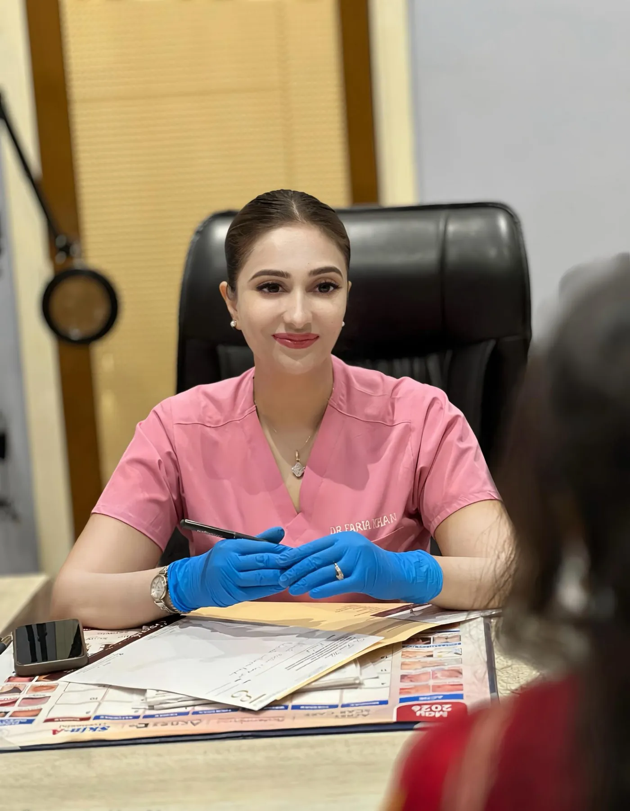
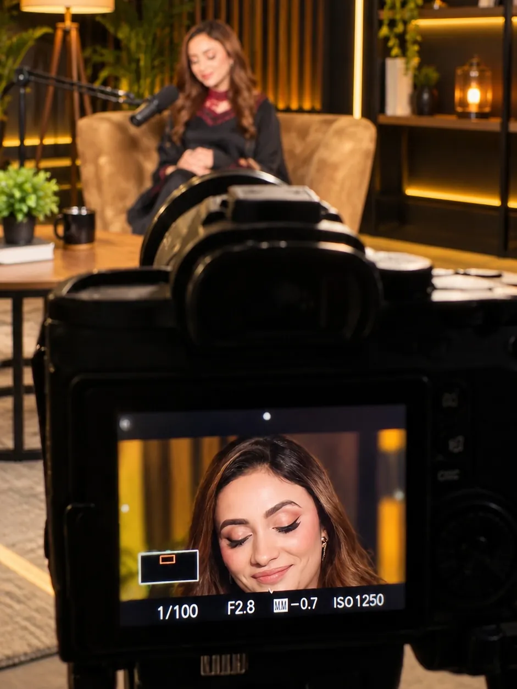
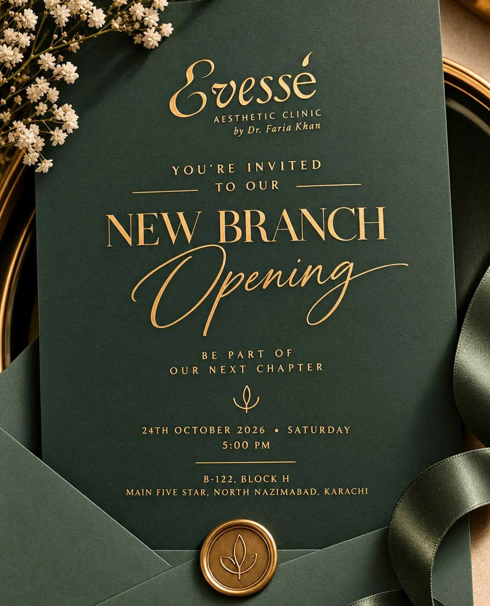

First, she became a doctor.
MBBS, then a postgraduate qualification and specialisation in dermatology — because before building a beauty brand, she wanted to master skin. Knowledge first. Always.
Dr. Faria Khan is a Consultant Dermatologist and Aesthetic Physician, Assistant Professor at Abbasi Shaheed Hospital / KMDC, and the founder of Evessé.

Not a clinic. Not a logo. Not a business plan. Just a young doctor who believed she could build something bigger.
MBBS, then a postgraduate qualification and specialisation in dermatology — because before building a beauty brand, she wanted to master skin. Knowledge first. Always.
Dermatology wasn’t the destination. She pursued advanced training in aesthetic medicine in the USA and brought a bigger vision home. Learn globally, practise responsibly.
“What if I build a place that reflects my philosophy?” Dermatology-led. Evidence-based. Personal. Premium. That is how the vision became Evessé Aesthetic Clinic.
Patients came for their skin. They stayed for her judgement, honesty and results — and gradually, Dr. Faria Khan became a name people trust.
Today she continues in clinical practice, academia and aesthetic medicine — teaching at KMDC, attending Dubai Derma 2026, and opening Evessé’s North Nazimabad clinic on 24 October 2026.



Evessé is the place her philosophy lives — two clinics in Karachi where every plan is set by a dermatologist and every room is designed to feel calm.
